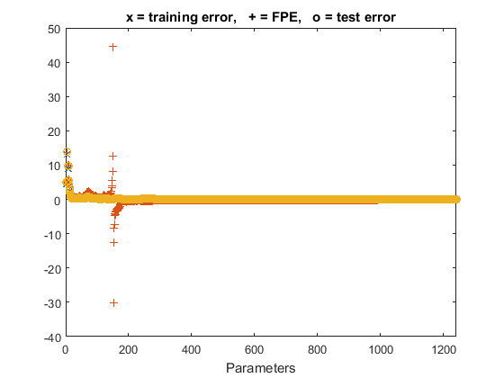
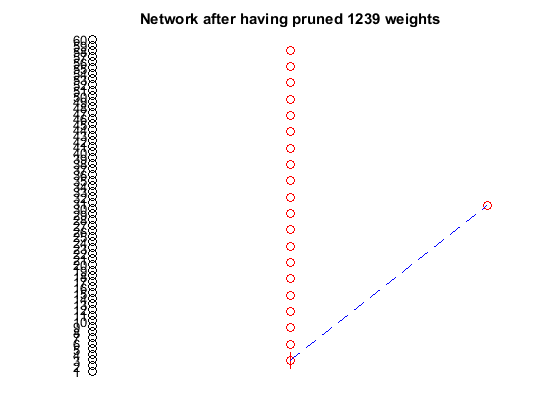

%load('modelEvaluationSmall.mat'); load('modelEvaluation.mat'); %for Y2 saved from SpamSaveModelProg.m %load('PHI2'); [Yhat,E,NSSE_te2] = nneval(NetDef,W1,W2,PHI2,Y2,1); fprintf('Test Error : %d\n',NSSE_te2);
Test Error : 1.206318e-01
NN = [57]; % number of input dimensition %NetDef = ['HHHHHHHH';'L-------']; % hhh number of hidden layer W1 first coloumn trparms = settrain; trparms=settrain(trparms,'maxiter',0,'D',[0.01 0.02]); %[thd,NSSEvec,FPEvec,NSSEtestvec,def,pv]=... %nnprune('nnarx',NetDef,W1,W2,[],y1,NN,trparms,[50 0],[],y2); fprintf('OBS start\n'); tic [Accobsprune,W1obsprune,W2obsprune]=obsprune(NetDef,W1,W2,PHI1,Y1,trparms,[],PHI2,Y2); fprintf('OBS Finshed\n'); obstime = toc fprintf('OBD start\n'); tic [Accobdprune,W1obdprune,W2obdprune]=obdprune(NetDef,W1,W2,PHI1,Y1,trparms,[],PHI2,Y2); fprintf('OBD finshed\n'); obdtime = toc save('AccuracyOfOBS_OBD.mat','Accobdprune','Accobsprune','obstime','obdtime'); %[Yhat,E,NSSE_te2] = nneval(NetDef,W1,W2,PHI2,Y2,1); %fprintf('Test Error Before pruining : %d\n',NSSE_te2); %[YhatOBS,EOBS,NSSE_OBS] = nneval(NetDef,W1obsprune,W2obsprune,PHI2,Y2,1); %fprintf('Test Error After OBS pruining : %d\n',NSSE_OBS); %[YhatOBD,EOBD,NSSEOBD] = nneval(NetDef,W1obdprune,W2obdprune,PHI2,Y2,1); %fprintf('Test Error After OBD pruining : %d\n',NSSEOBD);
OBS start --> Pruning session terminated <-- OBS Finshed obstime = 981.5638 OBD start --> Pruning session terminated <-- OBD finshed obdtime = 921.7621 
%trparms = settrain; % trparms=settrain(trparms,'maxiter',100,'D',[0.01 0.02]); % % %[thd,NSSEvec,FPEvec,NSSEtestvec,def,pv]=... % %nnprune('nnarx',NetDef,W1,W2,[],y1,NN,trparms,[50 0],[],y2); % [AccobsprunePrtraining,W1obsprunePrtraining,W2obsprunePrtraining]=obsprunePrtraining(NetDef,W1,W2,PHI1,Y1,trparms,[],PHI2,Y2); % [AccobdprunePretrain,W1obdprunePretrain,W2obdprunePretrain]=obdprunePretrain(NetDef,W1,W2,PHI1,Y1,trparms,[],PHI2,Y2); % % % %